Working Conclusion
Current result status: strong exploratory evidence, not final claims. The next analyses should rerun these plots after bad-channel exclusion and LFP referencing are finalized.
Important distinction: broadband LFP asks whether the overall signal got bigger; entrainment asks whether it got bigger specifically at the stimulus frequency. This is why `amp180_freq26` can be broadband-strong but not cleanly 26 Hz-entrained.
Key Numbers
Artifact-aware sustained broadband LFP
| Condition | Sustained mean abs-LFP change |
|---|---|
| amp180_freq26 | 53.78 |
| amp100_freq26 | 19.97 |
| amp180_freq5 | 16.96 |
| amp250_freq26 | 6.30 |
| amp250_freq5 | 1.85 |
| amp100_freq5 | 1.76 |
Time-frequency driven-band response
| Condition | Onset | Sustained | Offset |
|---|---|---|---|
| amp100_freq26 | -0.003 | 0.091 | 0.265 |
| amp180_freq5 | -0.112 | 0.064 | 0.107 |
| amp250_freq5 | -0.128 | 0.044 | 0.056 |
| amp180_freq26 | -0.089 | -0.043 | 0.142 |
| amp100_freq5 | -0.111 | -0.046 | -0.051 |
| amp250_freq26 | -0.349 | -0.300 | -0.110 |
Reference and candidate bad-channel sensitivity
| Condition | Raw | Physical-shank median | Analysis-group median |
|---|---|---|---|
| amp180_freq5 | 0.136 | 0.126 | 0.124 |
| amp100_freq26 | -0.013 | 0.033 | 0.043 |
| amp250_freq5 | -0.060 | -0.026 | -0.030 |
| amp180_freq26 | -0.062 | -0.033 | -0.014 |
| amp100_freq5 | -0.082 | -0.100 | -0.105 |
| amp250_freq26 | -0.144 | -0.131 | -0.133 |
Phase locking, sustained minus pre
| Condition | Sustained minus pre PLV |
|---|---|
| amp180_freq5 | 0.005 |
| amp180_freq26 | -0.001 |
| amp250_freq5 | -0.001 |
| amp100_freq26 | -0.004 |
| amp250_freq26 | -0.010 |
| amp100_freq5 | -0.013 |
Time-Frequency Results
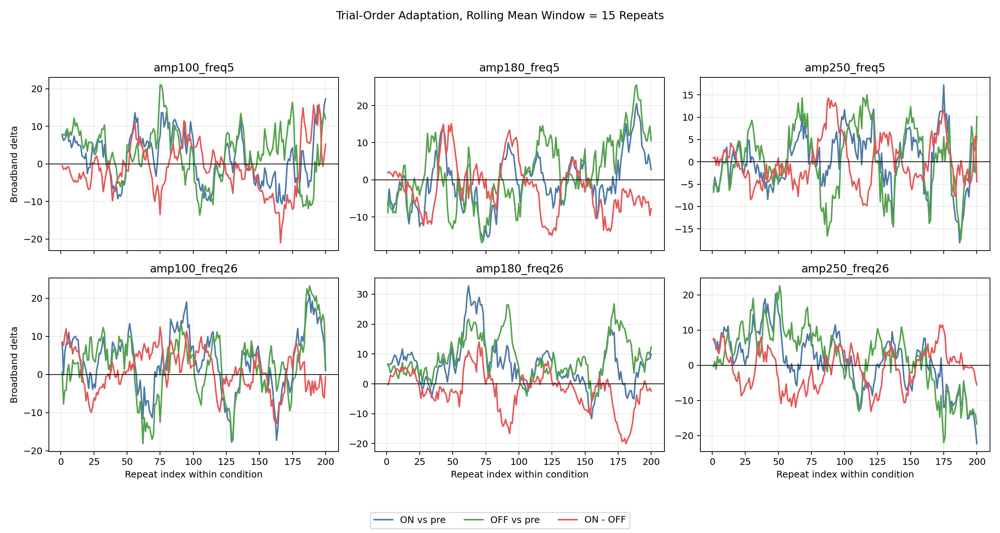
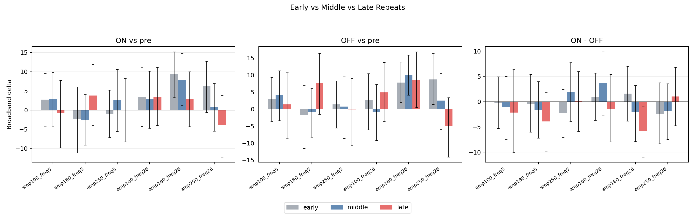
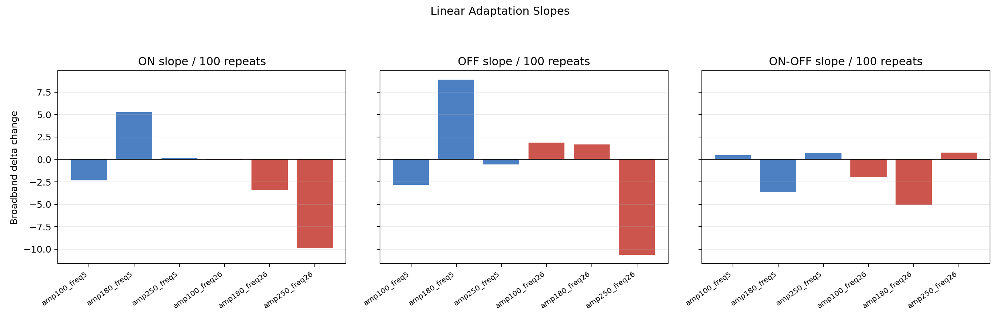
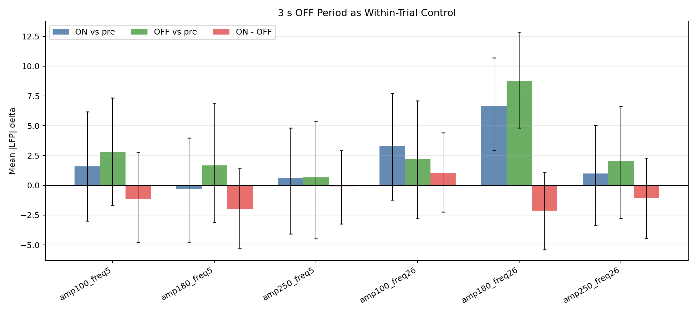
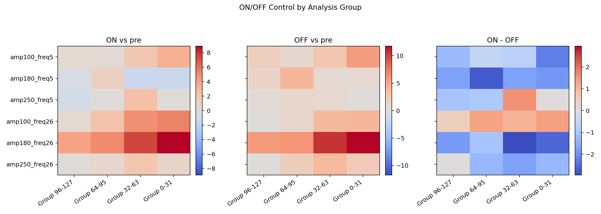

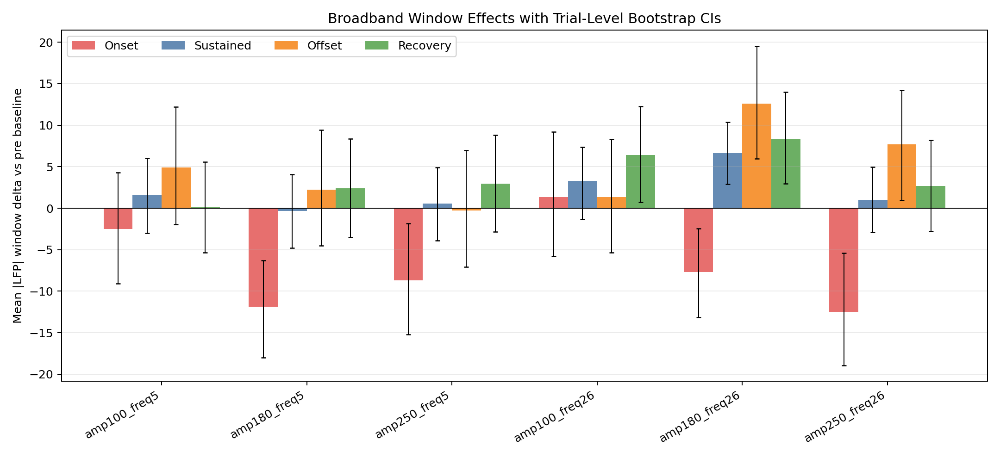
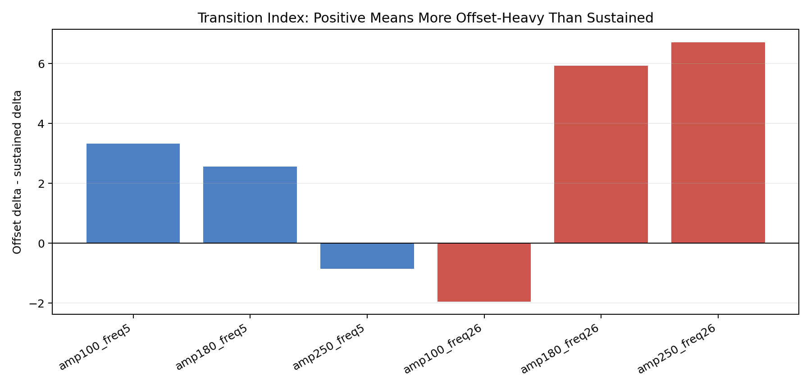
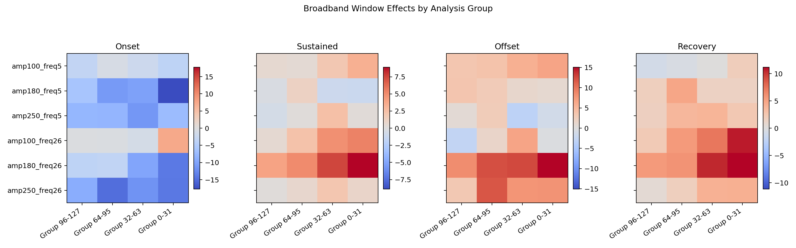
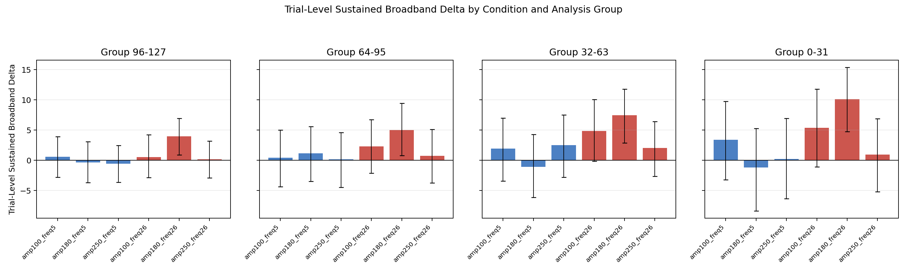
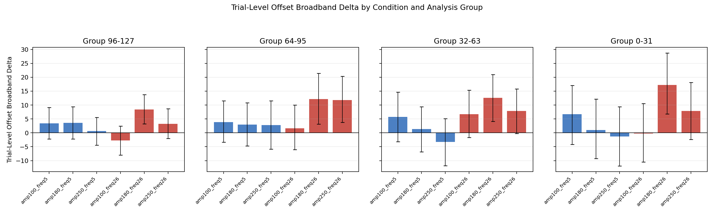
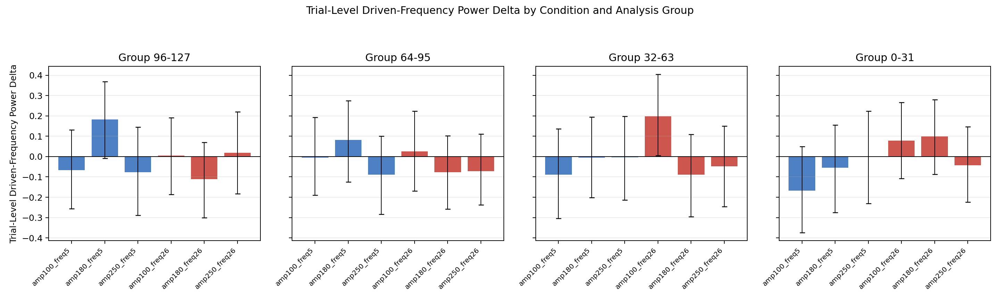


Frequency-Specific Power
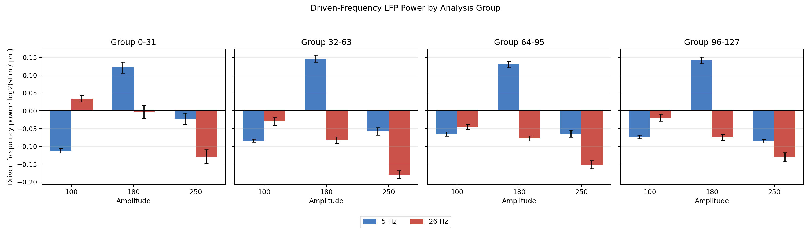
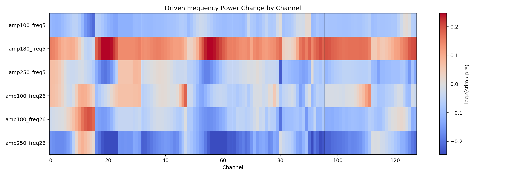
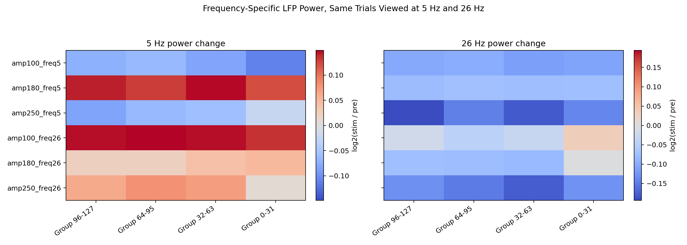
Reference / Bad-Channel Sensitivity
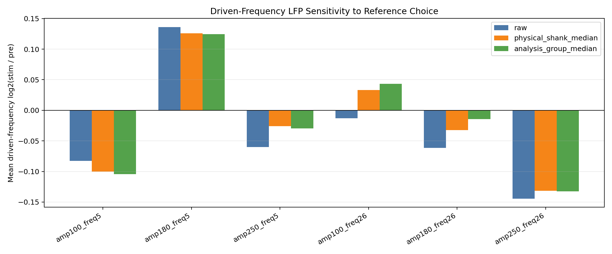

Phase-Locking / Entrainment
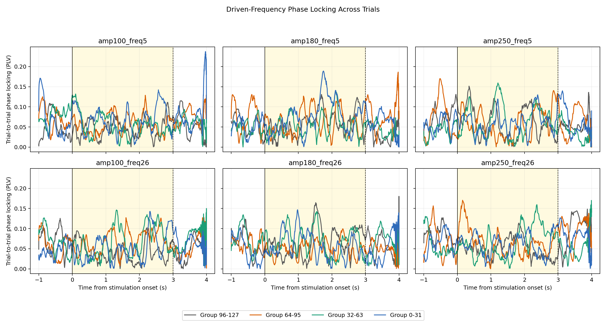
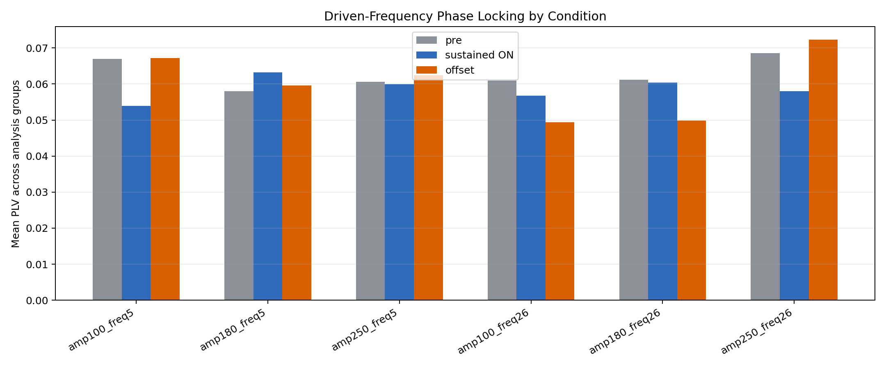
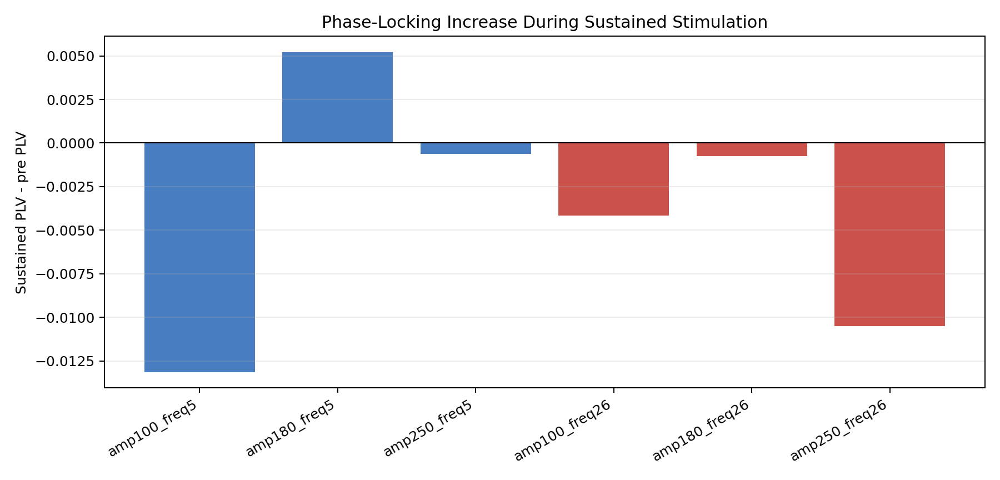
Artifact-Aware Broadband LFP


Earlier Exploratory Views


Next Steps
Finalize the visual bad-channel list, choose one LFP reference for final plots/statistics, rerun the key frequency and time-frequency analyses with those final settings, then consider more rigorous cycle-level stimulus modeling if exact actuator timing can be recovered. Keep anatomical labels at channel/group level until probe orientation is confirmed.